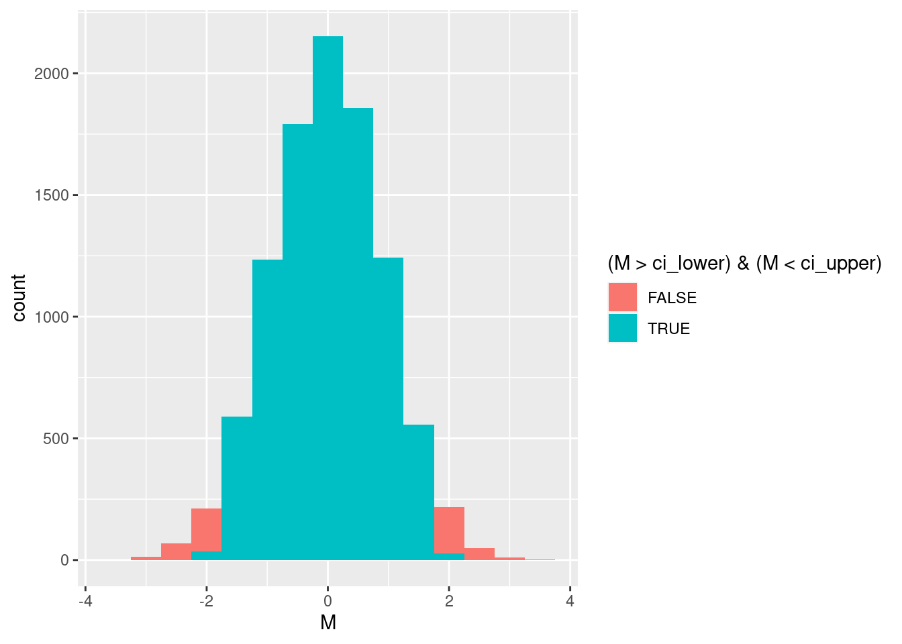
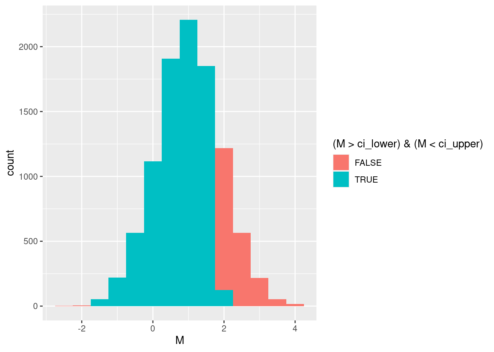
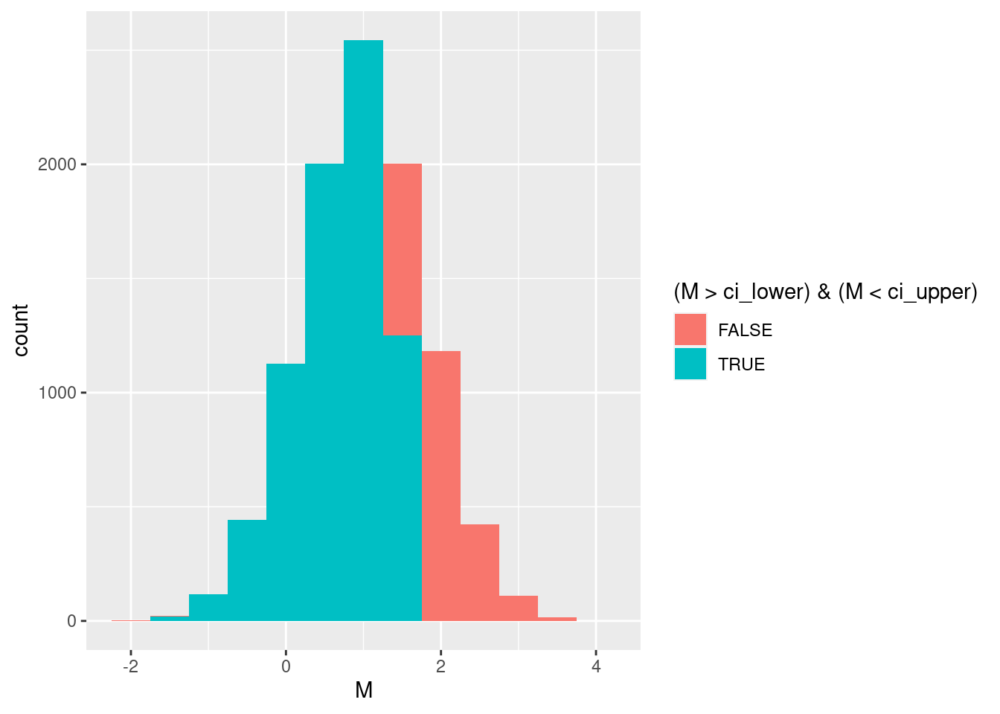
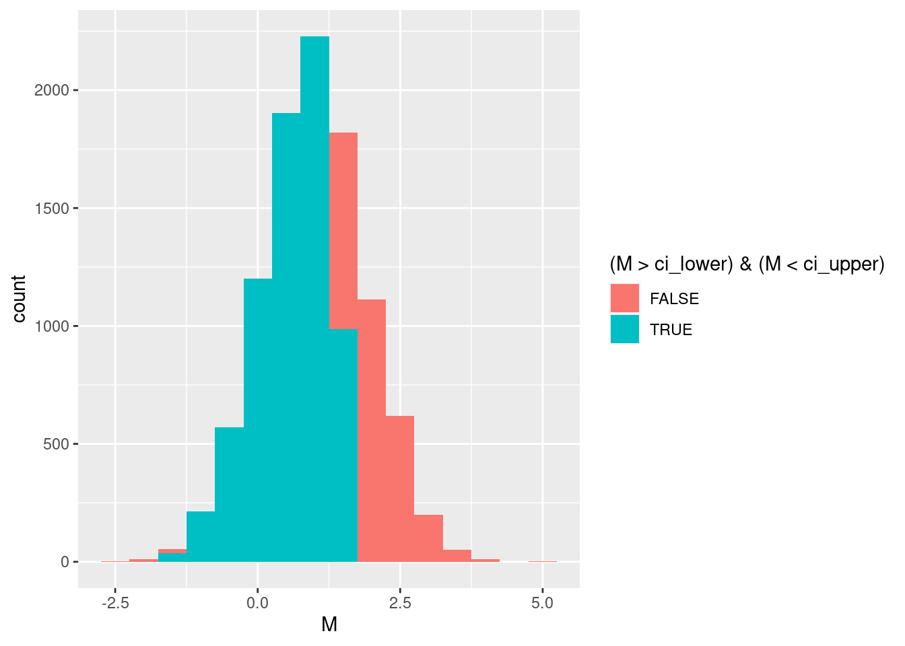
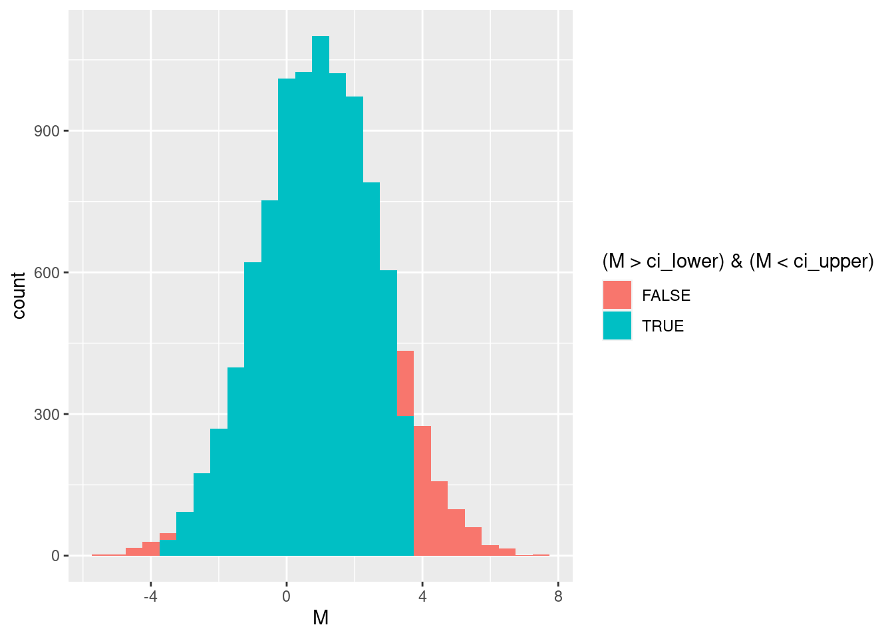
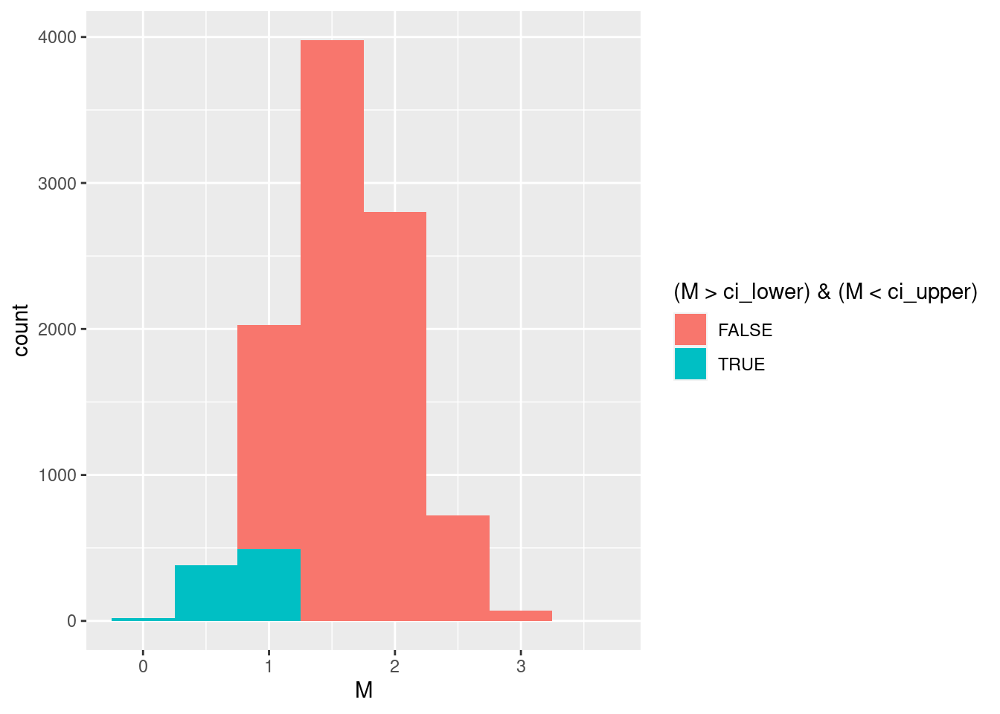

Lab 8 Statistical Power
If we conduct a null hypothesis test and decide to reject the null hypothesis, there are two possibilities: Either we incorrectly rejected the null hypothesis, in which case we made a Type I error; or we correctly rejected the null hypothesis (and thereby avoided a Type II error). We’ve seen that we get to decide the probability of a Type I error because it is the same thing as our “alpha level.” But what is the probability that we correctly reject the null hypothesis? This probability is called the power of our test and is often called “beta” (\(\beta\)).
The challenge in figuring out what “beta” is that we do not know ahead of time how far from the null hypothesis our results might be. The difference between the true population parameters and those assumed by the null hypothesis is called effect size. We already encountered this last session, in which we wondered how different the heart rates in a sample would need to be before we could always reject the null hypothesis. What we were doing was changing the “effect size” and seeing that, with a bigger effect size, power also increased.
In this session, we will explore the factors that contribute to power and conduct a null hypothesis test on real data to assess the effectiveness of a computer-based learning activity.
Before we begin, let’s make sure to load the tidyverse package from R’s library.
library(tidyverse)## ── Attaching packages ─────────────────────────────────────── tidyverse 1.3.0 ──## ✓ ggplot2 3.3.3 ✓ purrr 0.3.4
## ✓ tibble 3.0.5 ✓ dplyr 1.0.3
## ✓ tidyr 1.1.2 ✓ stringr 1.4.0
## ✓ readr 1.4.0 ✓ forcats 0.5.0## ── Conflicts ────────────────────────────────────────── tidyverse_conflicts() ──
## x dplyr::filter() masks stats::filter()
## x dplyr::lag() masks stats::lag()8.1 The Power of Positive Feedback
We will be looking at a study reported by Day et al. (2015). They were interested in how to convey to middle school students the concept of “positive feedback.” Positive feedback occurs whenever changing one part of a system leads to changes in another part of a system, which then causes additional change in the first part (A increases B and B increases A). Positive feedback is common in many natural, social, and technological systems. For example, having more wealth (A) allows you to put money into investments (B) which has the potential to give you even more wealth (A).
Day et al. (2015) wondered whether students could learn the concept of positive feedback by playing with a computer simulation of the relationship between ice and climate. The ice covering Earth’s north and south poles helps keep the planet cool because ice reflects sunlight rather than absorbing it (think of how dark clothes get warmer in sunlight than light colored clothes). Positive feedback occurs because if the global temperature increases (A), this melts the ice (B), which then leads to more warming (A) because there is less ice to reflect sunlight back into space (for crossword puzzle fans, the technical term for how reflective a surface is “albedo”). The simulation was meant to illustrate this relationship to students so they could identify similar kinds of positive feedback situations elsewhere.
Although their whole study looked at a number of things, we will focus on one particular research question: Can students learn the concept of positive feedback from a computer simulation?
8.1.1 Look at the data
Let’s first take a look at their data to get a sense of how they addressed these two research questions. Load it into R:
feedback_learning <- read_csv("https://raw.githubusercontent.com/gregcox7/StatLabs/main/data/learning_subset.csv")##
## ── Column specification ────────────────────────────────────────────────────────
## cols(
## ID = col_double(),
## Period = col_double(),
## AdvPlacement = col_double(),
## Grade = col_double(),
## Gender = col_character(),
## Pretest = col_double(),
## Posttest = col_double(),
## Improvement = col_double()
## )Click on the new “feedback_learning” data that’s now in R’s environment (upper right panel). Each row represents data from a single student and there are several columns. For now, let’s focus on the last three columns:
- Pretest: This is a score (between 8 and 40) on a test designed to measure understanding of the concept of positive feedback. This test was given prior to doing the computer simulation activity. The score is based on 8 questions which can give between 1 and 5 points.
- Posttest: This is another score (between 8 and 40) on a similar test, but given after the activity.
- Improvement: This is the difference between the posttest and pretest scores, and this is how we operationalize the construct of “learning.” If a student does better after the activity than before, they will have a positive improvement. If they do worse, they will have a negative improvement. And if they don’t learn anything, their improvement is zero.
In the next section, we will do some computer simulations ourselves! Specifically, we will explore various factors that affect our power to detect whether the activity actually led to student learning or not.
8.1.2 Specifying our null hypothesis
If the answer to the research question (above) was “no,” then we should expect no difference between the pre- and posttest scores. This tells us that our null hypothesis is that the population mean “Improvement” is zero. We will do a two-tailed test because we want to be open to the possibility that the activity actually harmed students’ understanding. This gives us our null and alternative hypotheses:
Null hypothesis (\(H_0\)): \(\mu = 0\)
Alternative hypothesis (\(H_1\)): \(\mu \neq 0\)
We are still missing something: Although we know what the population mean would be if the null hypothesis were true, what about the population standard deviation? In other words, what would be the typical variability between students on these tests? For the moment, let’s speculate that the population standard deviation is \(\sigma = 5\), representing the range of scores on a single question on the test. What we are saying is that we think the typical variability between students is around one question’s worth of points.
To make things easier for us later on, let’s give these numbers special labels in R:
null_mean <- 0
null_sd <- 5Finally, we need to think about the sample size so that we can use the Central Limit Theorem to figure out where to put the boundaries of our confidence interval. For now, let’s assume that we will have a sample of 30 students and give that number a special label as well:
sample_size <- 308.1.3 Building our confidence interval
Let’s say that we will reject the null hypothesis if the sample we get has less than a 0.05 probability of happening if the null hypothesis were true. In other words, we are setting (for now) our alpha level to 0.05, and as a result we need to find a 95% confidence interval. Let’s give this a label so we can use it in R:
alpha_level <- 0.05As mentioned above, we will use the normal distribution to find the upper and lower boundaries.
ci_lower <- qnorm(p = alpha_level / 2, mean = null_mean, sd = null_sd / sqrt(sample_size))
ci_upper <- qnorm(p = 1 - alpha_level / 2, mean = null_mean, sd = null_sd / sqrt(sample_size))Notice that, in addition to giving labels to the lower and upper ends of our confidence interval (ci_lower and ci_upper, respectively), we used the labels we made earlier to specify the mean and sd in qnorm. Very handy!
8.1.4 Visualizing the distribution of sample means
Finally, let’s visualize the distribution of sample means that we would get if the null hypothesis were true. Like we’ve done before, we will use colors to distinguish between samples that fall outside our confidence interval—and into the critical region leading us to reject the null hypothesis—from those that fall inside it.
First, let’s simulate a large number of possible sample means assuming the null hypothesis is true:
M <- rnorm(n=10000, mean = null_mean, sd = null_sd / sqrt(sample_size))
sample_means <- tibble(M)Now let’s make a colored histogram so we can see how often sample means fall inside or outside our confidence interval.
sample_means %>%
ggplot(aes(x = M, fill = (M > ci_lower) & (M < ci_upper))) +
geom_histogram(binwidth = 0.5)
We can also check and see how often one of the sample means from the null hypothesis ends up outside the confidence interval, leading us to make a Type I error by incorrectly rejecting the null hypothesis:
sample_means %>%
group_by((M > ci_lower) & (M < ci_upper)) %>%
summarize(n = n()) %>%
mutate(p = n / sum(n))## # A tibble: 2 x 3
## `(M > ci_lower) & (M < ci_upper)` n p
## * <lgl> <int> <dbl>
## 1 FALSE 514 0.0514
## 2 TRUE 9486 0.9498.2 Achieving a target level of power
A typical goal in many research areas is to have at least an 0.8 probability of correctly rejecting the null hypothesis. In this section, we will imagine different scenarios with the aim of achieving this level of power.
8.2.1 Effect size
Effect size is the difference between the actual population parameters and the population parameters we assume in the null hypothesis. In that sense, the null hypothesis assumes the “effect size” is zero.
In this case, “effect size” refers to how much test scores improve as a function of the learning activity. Let’s imagine what the distribution of sample means would look like if the effect size were 1, in other words, if the learning activity improved scores by, on average, a single point.
First, let’s put a label on this guess to make our lives easier:
effect_size <- 1Now, let’s do something similar to what we did above and simulate a whole bunch of sample means assuming this effect size:
M <- rnorm(n=10000, mean = null_mean + effect_size, sd = null_sd / sqrt(sample_size))
sample_means <- tibble(M)And we can visualize what this distribution looks like, along with how much of it falls in the critical region, leading us to correctly reject the null hypothesis.
sample_means %>%
ggplot(aes(x = M, fill = (M > ci_lower) & (M < ci_upper))) +
geom_histogram(binwidth = 0.5)
We can approximate the probability of correctly rejecting the null hypothesis using our simulation:
sample_means %>%
group_by((M > ci_lower) & (M < ci_upper)) %>%
summarize(n = n()) %>%
mutate(p = n / sum(n))## # A tibble: 2 x 3
## `(M > ci_lower) & (M < ci_upper)` n p
## * <lgl> <int> <dbl>
## 1 FALSE 1954 0.195
## 2 TRUE 8046 0.805But we can also find power exactly by using the normal distribution:
pnorm(q = ci_lower, mean = null_mean + effect_size, sd = null_sd / sqrt(sample_size)) +
1 - pnorm(q = ci_upper, mean = null_mean + effect_size, sd = null_sd / sqrt(sample_size))## [1] 0.1947752effect_size to different values (e.g., effect_size <- 0.5) and then re-run the lines of code we just used (i.e., simulate new sample means, make a histogram, and calculate power using the normal distribution). Try to find an effect size where the power ends up as close as you can get it to 0.8 without going over. What effect size did you find?
8.2.2 Sample size
Now let’s reset our hypothetical effect size back to 1 point.
effect_size <- 1Now instead of messing around with effect size, let’s see if we can change the sample size to try and achieve a power of 0.8. This is a bit trickier because we also have to adjust our confidence interval limits, because they also depend on sample size.
For example, let’s try increasing our sample size to 40.
sample_size <- 40Now, we have to re-calculate our confidence interval limits in addition to everything else:
ci_lower <- qnorm(p = alpha_level / 2, mean = null_mean, sd = null_sd / sqrt(sample_size))
ci_upper <- qnorm(p = 1 - alpha_level / 2, mean = null_mean, sd = null_sd / sqrt(sample_size))
M <- rnorm(n=10000, mean = null_mean + effect_size, sd = null_sd / sqrt(sample_size))
sample_means <- tibble(M)
sample_means %>%
ggplot(aes(x = M, fill = (M > ci_lower) & (M < ci_upper))) +
geom_histogram(binwidth = 0.5)
pnorm(q = ci_lower, mean = null_mean + effect_size, sd = null_sd / sqrt(sample_size)) +
1 - pnorm(q = ci_upper, mean = null_mean + effect_size, sd = null_sd / sqrt(sample_size))## [1] 0.2441412sample_size to different values (e.g., sample_size <- 13) and then re-run the lines of code we just used (i.e., find the CI limits, simulate new sample means, make a histogram, and calculate power using the normal distribution). Try to find a sample size where the power ends up as close as you can get it to 0.8 without going over. What sample size did you find?
8.2.3 Alpha level
Let’s put the sample size back to its original value of 30.
sample_size <- 30Now, we are going to mess around with the alpha level in order to achieve 0.8 power. In other words, we are changing the width of our confidence interval so that it allows us to correctly reject the null hypothesis 80% of the time.
For example, the code below is based on changing our alpha level from 0.05 to 0.1. Once again, we have to re-do our confidence interval:
alpha_level <- 0.1
ci_lower <- qnorm(p = alpha_level / 2, mean = null_mean, sd = null_sd / sqrt(sample_size))
ci_upper <- qnorm(p = 1 - alpha_level / 2, mean = null_mean, sd = null_sd / sqrt(sample_size))
M <- rnorm(n=10000, mean = null_mean + effect_size, sd = null_sd / sqrt(sample_size))
sample_means <- tibble(M)
sample_means %>%
ggplot(aes(x = M, fill = (M > ci_lower) & (M < ci_upper))) +
geom_histogram(binwidth = 0.5)
pnorm(q = ci_lower, mean = null_mean + effect_size, sd = null_sd / sqrt(sample_size)) +
1 - pnorm(q = ci_upper, mean = null_mean + effect_size, sd = null_sd / sqrt(sample_size))## [1] 0.2944317alpha_level in the code above to different values and then re-run it to make a histogram and calculate power. Try to find an alpha level where the power ends up as close as you can get it to 0.8 without going over. What alpha level did you find?
8.2.4 Population standard deviation
There’s one final thing that can affect power, and that is the population standard deviation (\(\sigma\)). Obviously, this is not something we can actually control in the real world, but it is important to consider when thinking about the power to correctly reject the null hypothesis. If the population is more variable, it will be harder to detect any differences that are the result of our intervention.
Let’s first reset our alpha level back to 0.05
alpha_level <- 0.05As above, when we mess with the population standard deviation, this trickles down into every aspect of our hypothesis test, since null_sd appears pretty often. For example, let’s try making the population twice as variable as it was before by setting null_sd to 10.
null_sd <- 10
ci_lower <- qnorm(p = alpha_level / 2, mean = null_mean, sd = null_sd / sqrt(sample_size))
ci_upper <- qnorm(p = 1 - alpha_level / 2, mean = null_mean, sd = null_sd / sqrt(sample_size))
M <- rnorm(n=10000, mean = null_mean + effect_size, sd = null_sd / sqrt(sample_size))
sample_means <- tibble(M)
sample_means %>%
ggplot(aes(x = M, fill = (M > ci_lower) & (M < ci_upper))) +
geom_histogram(binwidth = 0.5)
pnorm(q = ci_lower, mean = null_mean + effect_size, sd = null_sd / sqrt(sample_size)) +
1 - pnorm(q = ci_upper, mean = null_mean + effect_size, sd = null_sd / sqrt(sample_size))## [1] 0.08501566null_sd in the code above to different values and then re-run the code following it to make a histogram and calculate power. Try to find a population SD where the power ends up as close as you can get it to 0.8 without going over. What population SD did you find?
8.3 Using data to test the null hypothesis
Now that we’ve explored the factors that contribute to the power of this—and any—null hypothesis test, let’s see how the data actually played out.
First, remember that we had to make a reasonable guess about the population SD before. Now, we are going to estimate it using the sample SD of our actual data. This has some consequences we will discuss later in the course, but for now we will accept this as is:
null_sd <- sd(feedback_learning$Improvement)Above, the $ pulls out the Improvement column from our feedback_learning dataset, so null_sd is now the standard deviation of the improvement values we actually observed.
Also, notice that the sample size they had was 69, so let’s make sure to adjust that as well:
sample_size <- 698.3.0.1 Confidence interval limits
Now, we find the upper and lower limits of our confidence interval:
ci_lower <- qnorm(p = alpha_level / 2, mean = null_mean, sd = null_sd / sqrt(sample_size))
ci_upper <- qnorm(p = 1 - alpha_level / 2, mean = null_mean, sd = null_sd / sqrt(sample_size))And we can find the sample mean (and give it a label, since we’ll be using it later):
sample_mean <- mean(feedback_learning$Improvement)Because this falls outside the confidence interval, we reject the null hypothesis!
8.3.0.2 The \(p\) value
Let’s also find the \(p\) value, the probability that we would observe a result at least as extreme as our result if the null hypothesis were true. Because the sample mean is larger than the mean according to the null hypothesis, we need to find the probability of being above the sample mean:
1 - pnorm(q = sample_mean, mean = null_mean, sd = null_sd / sqrt(sample_size))## [1] 0.0004771661But remember that because this is a two-tailed test, we need to multiply the number above by 2, to account for both the upper and lower parts of the critical region.
2 * (1 - pnorm(q = sample_mean, mean = null_mean, sd = null_sd / sqrt(sample_size)))## [1] 0.0009543322This is the final \(p\) value, and we can see that it is less than our alpha level of 0.05.
8.3.0.3 Estimated power
Finally, let’s try something interesting. Assume that the sample mean reflects the actual effect size:
effect_size <- sample_meanNow we can use this to simulate plausible sample means we might have observed if the effect size were equal to the sample mean. As a result, we can see what the power of this test would be if applied to similar studies in the future. All we need to do now is run the very same code we used in our simulations above to visualize and calculate the power that this study had.
M <- rnorm(n=10000, mean = null_mean + effect_size, sd = null_sd / sqrt(sample_size))
sample_means <- tibble(M)
sample_means %>%
ggplot(aes(x = M, fill = (M > ci_lower) & (M < ci_upper))) +
geom_histogram(binwidth = 0.5)
pnorm(q = ci_lower, mean = null_mean + effect_size, sd = null_sd / sqrt(sample_size)) +
1 - pnorm(q = ci_upper, mean = null_mean + effect_size, sd = null_sd / sqrt(sample_size))## [1] 0.91047598.4 Wrap-up
We conducted simulations to see how effect size, sample size, alpha level, and population variability all affect the power of a test to correctly reject the null hypothesis. We conducted such a test on actual data studying whether a computer simulation learning activity increased student understanding of the concept of “positive feedback.” In addition, we saw how to use an observed effect size to calculate the power of a test.